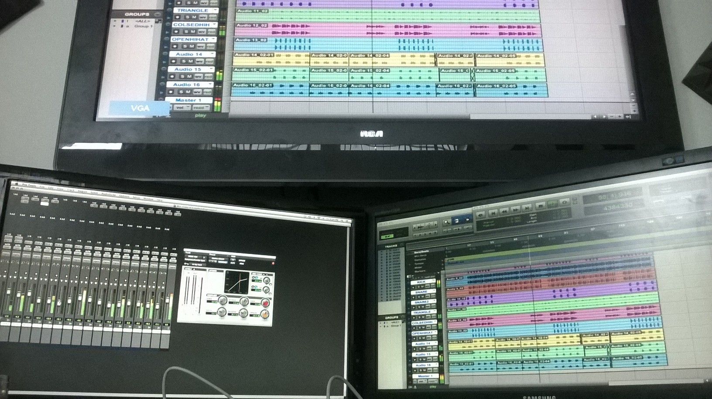

Extreme Institue by Nelly
In 2013 I enrolled in the Extreme Institue to study recording engineering and music production. For a final project I had to produce, write, and record an ep of five songs. Although there are many ways to create an album, I decided to write the lyrics first.

The Writing Process
With just an accoustic guitar in hand, I would sit in my room for hours and create chord progressions and melodies. When I felt that I had something I could work with, I would write it down in my composition notebook. After the writing process next came recording the demos.

The Demos
I recorded the demos using two music programs, ProTools and Maschine. I would start with the melody and chords that I used in the writing process and go from there. I tried to produce at least two different versions of the same song. Sometimes the demos would only consit of a sythn track and a steady hi-hat. Once the demos and writing were done, now it was time for the studio sessions.Destruction-Road-Demo
Press the play button to listen to "Love Song"" Demo
Click here to listen to the final version of "Love Song".
Studio Sessions
While in the studio, I took the demos that I had and been working on and built a final track. First I would record the drums, then the guitars, and last but not least my (horrible)vocals. Recording live instruments in the studio was fun but its also a long process. There would be days when it took 8 hrs and multiple takes just to get the right recording.
Mixing and Editing
Mixing and editing was by far the most challenging part of the process. Mixing the multiple tracks came first. A little EQ and a little compression is always good but then came the tedious process of editing. For the most part I didn't really have to edit any of the instrument tracks but them vocals tho!!! Due to the fact tha I'm not a natural born singer, I had to do alot of editing to the vocals. Alot of copy,cut, and paste was going on.
Final Project
Finally after six long weeks of recording, mixing , and editing (those horrible vocals) my project was finally finished.
Press the play button to listen to the final version Of "Love Song"